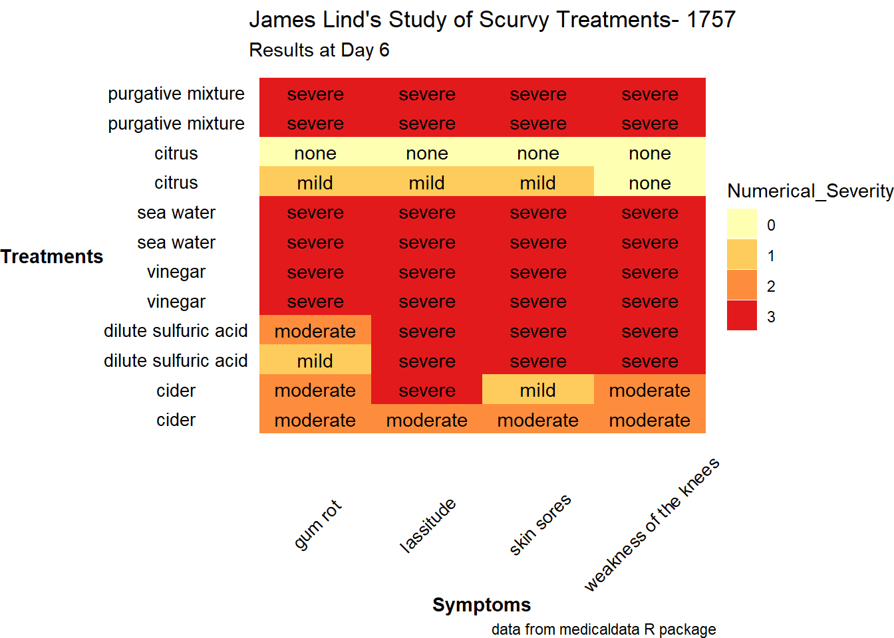
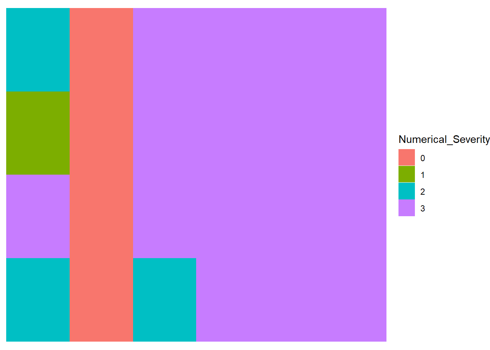

library(tidyverse) # who doesn't want to be tidy
library(gt) # nice tables
library(ggthemes) # more themes for ggplots
library(RColorBrewer) # color scales
library(here) # consistent method for working in file structureA Heatmap of James Lind’s Scurvy Study
R
R-code
code-along
TidyTuesday
tidy
heatmap
ggplot
tidyverse
ggthemes
Making a Heatmap of James Lind’s Scurvy Study using ggplot. Data cleaning and reformating handled through tidyverse packages.
This week’s TidyTuesday concerns what some have called the first randomized clinical trial- a study by James Lind evaluating various treatments for scurvy. This data has been collected into the medicaldata R package from Lind’s book on scurvy.
Loading the Libraries and Data
Loading the TidyTuesday in the normal way.
tuesdata <- tidytuesdayR::tt_load(2023, week = 30)
scurvy <- tuesdata$scurvyReformat and Clean the data
Take a look at the data.
scurvy %>% gt()| study_id | treatment | dosing_regimen_for_scurvy | gum_rot_d6 | skin_sores_d6 | weakness_of_the_knees_d6 | lassitude_d6 | fit_for_duty_d6 |
|---|---|---|---|---|---|---|---|
| 1 | cider | 1 quart per day | 2_moderate | 2_moderate | 2_moderate | 2_moderate | 0_no |
| 2 | cider | 1 quart per day | 2_moderate | 1_mild | 2_moderate | 3_severe | 0_no |
| 3 | dilute_sulfuric_acid | 25 drops of elixir of vitriol, three times a day | 1_mild | 3_severe | 3_severe | 3_severe | 0_no |
| 4 | dilute_sulfuric_acid | 25 drops of elixir of vitriol, three times a day | 2_moderate | 3_severe | 3_severe | 3_severe | 0_no |
| 5 | vinegar | two spoonfuls, three times daily | 3_severe | 3_severe | 3_severe | 3_severe | 0_no |
| 6 | vinegar | two spoonfuls, three times daily | 3_severe | 3_severe | 3_severe | 3_severe | 0_no |
| 7 | sea_water | half pint daily | 3_severe | 3_severe | 3_severe | 3_severe | 0_no |
| 8 | sea_water | half pint daily | 3_severe | 3_severe | 3_severe | 3_severe | 0_no |
| 9 | citrus | two lemons and an orange daily | 1_mild | 1_mild | 0_none | 1_mild | 0_no |
| 10 | citrus | two lemons and an orange daily | 0_none | 0_none | 0_none | 0_none | 1_yes |
| 11 | purgative_mixture | a nutmeg-sized paste of garlic, mustard seed, horseradish, balsam of Peru, and gum myrrh three times a day | 3_severe | 3_severe | 3_severe | 3_severe | 0_no |
| 12 | purgative_mixture | a nutmeg-sized paste of garlic, mustard seed, horseradish, balsam of Peru, and gum myrrh three times a day | 3_severe | 3_severe | 3_severe | 3_severe | 0_no |
Small data set, maybe best as a table.
First some cleanup. First, I’m replacing all the underscores (“_”) in the treatment descriptions with spaces. I use str_replace_all() from stringr inside a mutate() for that.
scurvy <- scurvy %>%
mutate(treatment = str_replace_all(treatment, "_", " "))Reshaping the Data with pivot_longer()
A heatmap is like a table, but a bit more visually interesting. I’d like to plot the treatment vs. the symptoms. To do so, the data needs to be reshaped into the long format. This is easily done using pivot_longer() from tidyr. Here, I give it the name of the two new columns, symptom and severity. The symptom column will contain the values gum rot, skin sores, etc. that are currently fields. The severity column will contain the likert scale rating for that symptom (1- mild, 2- moderate, 3- severe). I’m also going to split those ratings into a numerical (1, 2, 3) and descriptive (“mild”, “moderate”, “severe”) rating using separate() from tidyr.
scurvy2 <- scurvy %>%
pivot_longer(4:7, names_to = "symptom", values_to = "severity") %>%
separate(
severity,
sep = "_",
into = c("Numerical_Severity", "Descriptive_Severity")
)Now, I want to get rid of the day 6 label (d6) from the symptom. There are no other time points, so the data is somewhat extraneous. Here I’m using separate_wider_delim(). This is actually the active/ recommended separate function in tidyr. Both separate() and extract() still work, but it is recommended that users switch to the new family of separate functions. Instead of into for the new column names, this function uses names. The list of names can contain NA for sections that you wish to discard. Here, I throw away the second section (_d6). Then I use str_replace_all() to clean out the rest of the underscores in the symptom names. Note that if I did this step first, I’d need a different delimiter. I generally like to do any separations before I do str_replace() because you are more likely to have a unique separator/delimiter before you clean up special symbols.
scurvy2 <- scurvy2 %>%
separate_wider_delim(symptom, delim = "_d6", names = c("symptom", NA)) %>%
mutate(symptom = str_replace_all(symptom, "_", " "))Making the Heatmap
I never remember the color palette names, so here they are. The par(cex = 0.5) command is a base R method of changing the parameters for the next plot. The cex parameter controls the text size. There are a lot of palettes, so if you don’t do this the labels will be squished.
Choosing a Color Palette
par(cex = 0.5)
display.brewer.all() First Draft of the Heatmap
And the first draft of the heatmap. I’m coloring the heatmap by numerical severity and I’m labeling it with the descriptive severity.
ggplot(scurvy2, aes(treatment, symptom)) +
geom_tile(aes(fill = Numerical_Severity)) +
geom_text(aes(label = Descriptive_Severity)) +
scale_fill_brewer(palette = "YlOrRd")Oh, that is ugly. And ggplot grouped all the treatments, so we have overlapping text labels.
Plotting by study_id
Let’s fix things up. First, plot by study_id instead of treatment group. That will get me back to the 12 patients. And the legend should be removed. This is done using theme(legend.position = "none"). I’m also going to flip x and y. Since there are only 4 symptoms, this will give the text labels (mild, moderate, severe) more space since there will only be 4 labels across instead of 12.
scurvy_heatmap <- ggplot(scurvy2, aes(symptom, study_id)) +
geom_tile(aes(fill = Numerical_Severity)) +
geom_text(aes(label = Descriptive_Severity)) +
scale_fill_brewer(palette = "YlOrRd") +
theme(legend.position = "none")
scurvy_heatmapMapping study_id Back to Treatments
Now I need to get back to the treatment groups. The original data frame, scurvy, has the treatment groups matched to the patient_id. The mapping can be done using scale_x_continuous(breaks = 1:12, labels = scurvy$treatment). This is pretty non-intuitive to me;I found this suggestion on Stackoverflow.
scurvy_heatmap <- scurvy_heatmap +
scale_y_continuous(breaks = 1:12, labels = scurvy$treatment)
scurvy_heatmap
Modifying the Style with theme()
Now tweak the theme to clean things up. First, I’m going to start with a theme that is closest to want I want. In this case, I went with theme_void(), which actually removes all the elements. I then add the few I want back in. There is so much stuff to remove (the axis, the grid marks, the gray background). I want to retain the axis title and text. I’ll add the titles and captions too.
scurvy_heatmap <- scurvy_heatmap +
theme_void() +
theme(axis.text = element_text(size = 10),
axis.title = element_text(face = 'bold')) +
labs(title = "James Lind's Study of Scurvy Treatments- 1757",
caption = "data from medicaldata R package",
subtitle = "Results at Day 6") +
ylab('Treatments') + xlab('Symptoms') +
theme(axis.text.x = element_text(angle = 45))
scurvy_heatmap
theme_void() Isn’t Completely Empty!
And the legend came back… Apparently, theme_void does include the legend, so it re-spawned. This is a bit surprising, since the description says “A completely empty theme.”
I’m going to quickly test this.
ggplot(scurvy2, aes(treatment, symptom)) +
geom_tile(aes(fill = Numerical_Severity)) +
theme_void()
Final Heatmap
Okay, so not a big deal to remove this again. The y axis label also rotated, so that needs to be rotated back.
scurvy_heatmap <- scurvy_heatmap +
theme(legend.position = "none") +
theme(axis.title.y = element_text(angle = 90))
scurvy_heatmapggsave(here("posts", "2023-07-tidytuesday-scurvy", "thumbnail.png"))Saving 7 x 5 in imageThoughts about Scurvy
Despite having experimental evidence that fresh citrus was effective in treating scurvy, James Lind recommended other treatments and preparations in his book. Of particular note is a concentrate of citrus juices that could be bottled and stored indefinitely. Vitamin C is very unstable; the processing and storage removed almost all the vitamin C from the juice. This is covered in a fascinating paper by R. E. Hughes, where he prepared and measured the vitamin C levels in various treatments recommended by Lind. Hughes does touch on the issue of cider. Lind’s data seems to suggest that cider was moderately effective as a treatment. Fermentation and aging does degrade vitamin C, so the cider likely did not have more than trace amounts of vitamin C. I suspect there was still some and perhaps enough to mitigate some of the worst impacts of scurvy.
Citation
BibTeX citation:
@online{sinks2023,
author = {Sinks, Louise E.},
title = {A {Heatmap} of {James} {Lind’s} {Scurvy} {Study}},
date = {2023-07-25},
url = {https://lsinks.github.io/posts/2023-07-25-tidytuesday-scurvy/scurvy.html},
langid = {en}
}
For attribution, please cite this work as:
Sinks, Louise E. 2023. “A Heatmap of James Lind’s Scurvy
Study.” July 25, 2023. https://lsinks.github.io/posts/2023-07-25-tidytuesday-scurvy/scurvy.html.